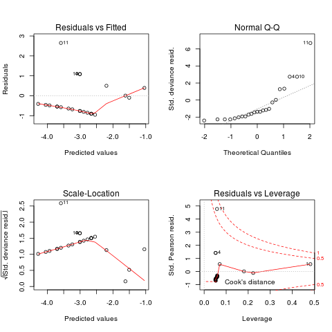
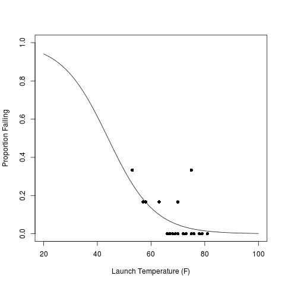
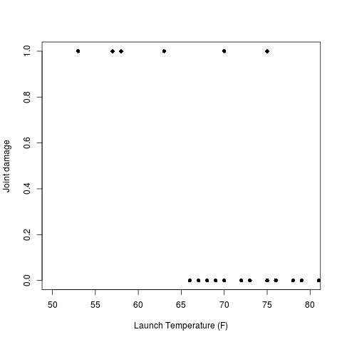
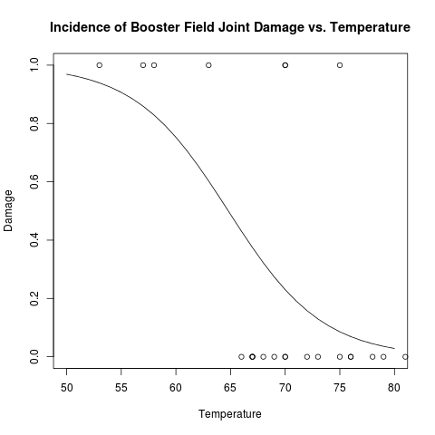

learnR
Table of Contents
1 fit a model
################################################################ # name:fit x<-rnorm(100,10,5) y<-rnorm(100,20,15) fit <- lm(y~x) summary(fit)
2 make a plot
################################################################ # name:plot # once the plot composition looks good, I write it directly to a hi res file # png('aPlot.png', res=200,width = 600, height = 600) plot(x,y,main="Example Plot",xlab="X Variable",ylab="Y Variable") abline(fit,col="Red") dev.off()

3 points
################################################################ # name:points png('pchopts.png') par(mfrow=c(3,10), mar=c(0,0,2,0)) for(i in c(1:25)){ plot(1,1,pch=i, axes=F, cex = 3, col = 'blue', bg = 'yellow') title(i) } for(i in c("*", "?", ".", "X", "a")){ plot(1,1,pch=i, axes=F, cex = 3, col = 'blue', bg = 'yellow') title(i) } dev.off()

4 statistical modelling
4.1 Logistic Regression using the NASA Challenger dataset
Copied from Peter Caley's notebook on challenger disaster page 103 'O' ring failures. https://alliance.anu.edu.au/access/content/group/bf77d6fc-d1e1-401c-806a-25fbe06a82d0/R%20wiki%20files/R%20logistic%20example/Caley%20Statistical%20Modelling%20Course%20Notes%20-%20Working%20copy.pdf
4.1.1 load
################################################################ # name:logistic regression #Load the data #The following R code will construct the dataset n.fail <- c(2, 0, 0, 1, 0, 0, 1, 0, 0, 1, 2, 0, 1, 0, 0, 0, 0, 0, 1, 0, 0, 0, 0) temp <- c(53, 66, 68, 70, 75, 78, 57, 67, 69, 70, 75, 79, 58, 67, 70, 72, 76, 81, 63, 67, 70, 73, 76) # there were 6 o rings for each of 23 attempts total <- rep(6,23) # probability of fail p.fail <- n.fail/total # Response = resp column bind them together resp <- cbind(n.fail, total-n.fail)
4.1.2 an aside, reading data from CSV
########################################################################### # we can write text files easily once the data frame or matrix is in shape data <- as.data.frame(cbind(resp,temp)) names(data) <- c('nfail','totalMinusNfail', 'temp') write.csv(data, 'learnR-logistic-data.csv', row.names=F) ########################################################################### # and read it in data2 <- read.csv('learnR-logistic-data.csv')
4.1.3 clean
Exploratory data analysis often begins with a plot
################################################################ # name:learnR-logistic png('pfail.png') plot(temp, p.fail, pch=16, xlim=c(40,100), ylim=c(0,0.4)) title('A plot of the proportion failed by temperature') dev.off()
A plot of the data is shown below:

4.1.4 do
- Fit a logistic linear regression
########################################################################### # newnode: linear linear <- glm(resp ~ 1 + temp, family=binomial(link=logit)) summary(linear) linearoutput <- summary(linear) linearoutput$coeff
Estimate SE z value p value 5.08497723236888 3.05247411952113 1.66585433103249 0.0957424316329616 -0.11560116666022 0.0470236223378252 -2.45836370983339 0.0139571741811117
- select a coefficient
########################################################################### # newnode: learnR-logistic cf <- linearoutput$coeff signif(cf[which(row.names(cf) == 'temp'),'Estimate'],2)
-0.12
- Write the output to a spreadsheet
It is often good to write the output to a spreadsheet file.########################################################################### # newnode: learnR-logistic write.csv(linearoutput$coeff,"challengerOfails.csv")
- model diagnostic 1 - plots of model performance
########################################################################### # newnode: learnR-logistic png('challengerLogistic.png') par(mfrow=c(2,2)) plot(linear) dev.off()
Some standard model diagnostics plot is shown

- model diagnostic 2 - plot of the prediction
########################################################################### # newnode: learnR-logistic dummy <- data.frame(temp=seq(20,100,1)) pred.prob <- predict.glm(linear, newdata=dummy, type="resp") png('pfailfit.png') plot(temp, p.fail, xlab="Launch Temperature (F)", ylab="Proportion Failing", pch=16, xlim=c(20,100), ylim=c(0,1.0)) lines(dummy$temp, pred.prob) dev.off()
A plot of prediction fit to the data is shown

4.2 logistic regression of a binary response
In the next example we analyse the data as a binary response variable where 1 represents damage to field joints, and a 0 represents no damage.
This was copied from D. Cook, P. Dixon, W. M. Duckworth, M. S. Kaiser, K. Koehler, W. Q. Meeker and W. R. Stephenson. 'Binary Response and Logistic Regression Analysis' https://alliance.anu.edu.au/access/content/group/bf77d6fc-d1e1-401c-806a-25fbe06a82d0/R%20wiki%20files/R%20logistic%20example/stat415_chapter3.pdf
4.2.1 load the response variable data
########################################################################### resp <- as.data.frame(resp) resp$fail <- ifelse(resp$n.fail > 0, 1, 0) resp$temp <- temp
4.2.2 clean
png('fail.png') with(resp, plot(temp, fail, xlab="Launch Temperature (F)",ylab="Joint damage", pch=16, xlim=c(50,80), ylim=c(0,1.0)) ) dev.off()
Incidence of joint failure by temperature:

4.2.3 do logistic analysis
Now do the analysis as suggested on page 22.
chal.logit <- glm(fail~temp,family=binomial, data = resp)
summary(chal.logit)$coeff
| Estimate | Std. Error | z value | p value |
| 15.0429016476892 | 7.37863013178574 | 2.03871198027493 | 0.0414787813758369 |
| -0.232162744218401 | 0.108236429548873 | -2.14495937445507 | 0.0319560953057822 |
4.2.4 Plot the Regression Curve
png('pfailfit2.png') cx <- c(50:80/1) cyhat <- coefficients(chal.logit)[c(1)] + coefficients(chal.logit)[c(2)]*cx cpihat <- exp(cyhat)/(1+exp(cyhat)) with(resp,plot(temp,fail,xlab="Temperature",ylab="Damage", main="Incidence of Booster Field Joint Damage vs. Temperature", xlim = c(50,80)) ) lines(cx,cpihat) dev.off()
And the result
